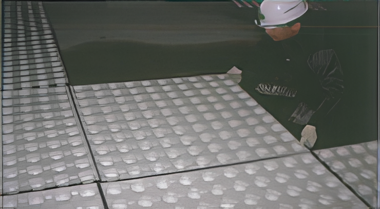

단열
TM 단열 배수판
결로·열손실 저감 + 배수 기능 일체형
대표 규격
500 × 500 × 45T
상세 보기 →
현장 목적에 따라 4가지 제품군으로 구성됩니다.
배수 성능·시공성·현장 적용성을 중심으로 설계합니다.
바닥 배수판 공법으로 물 고임을 줄이고 구조적 안정성을 지원합니다.
현장 조건(동선/구배/마감)에 맞춰 적용 범위를 협의하고 시공을 지원합니다.
지하 바닥(주차장/공용부) 배수 성능 강화가 필요한 구간
결로·열손실 저감과 배수를 동시에 구현하는 일체형 시스템
| 항목 | 내용 |
|---|---|
| 대표 규격 | 500 × 500 × 45T |
| 추천 적용 | 지하층/주차장/습기 취약 구간 |
차량 통행 충격·진동을 흡수하여 소음을 저감하는 구조
| 항목 | 내용 |
|---|---|
| 대표 규격 | 730 × 2220 × 45T |
| 추천 적용 | 지하주차장/차량 통행 구간 |
매트형 / 사출형 구성으로 다양한 현장에 대응
대형 매트 구조로 대면적 시공에 적합하며, 시공 공정을 단축합니다.
규격: 730 × 2200
정밀 사출 방식으로 균일한 품질을 유지하며, 부분 교체 및 다양한 구간 적용이 용이합니다.
규격: 500 × 500
옥상·조경·보행로 등 식생 환경을 고려한 배수 솔루션
| 항목 | 내용 |
|---|---|
| 대표 규격 | 500 × 500 × 30T / 35T |
| 추천 적용 | 옥상조경/조경 구간/보행로 |
매트형/사출형 기준 대표 규격입니다. (현장 조건에 따라 변경/협의 가능)
| 구분 | 규격 | 두께 | 적용 | 비고 |
|---|---|---|---|---|
| 사출형 | 500 × 500 | 30T, 45T, 70T, 120T, 200T 지정제품 | TM 바닥배수판 공법 | 상세도면 자료실 제공 |
| 매트형 | 730 × 2,200 | 30T, 45T, 70T 지정제품 | TM 바닥배수판 공법 | 상세도면 자료실 제공 |
사진 및 상세 도면은 추후 업데이트 예정입니다. (현재는 플레이스홀더)
도면/규격 상세가 더 필요하면 상담 시 요청해주세요.
* 상세도면은 현장 조건 협의 후 제공됩니다.